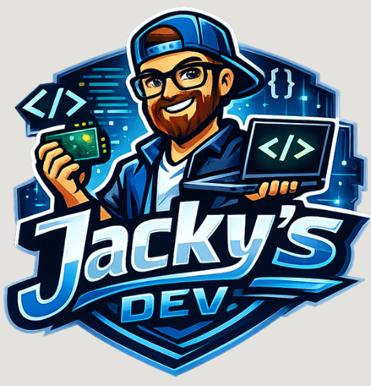

Jacky's Dev : Déploiement d'Infrastructure DevSecOps

Le Contexte Global
Au sein d'une entreprise fictive nommée Jacky's Dev, les équipes faisaient face à des retards critiques dans la livraison des nouvelles fonctionnalités. Le déploiement des applications était géré manuellement par les Ops via des pratiques "maison", source d'erreurs et de lenteurs.
Notre mission en tant que nouvelle équipe DevOps/DevSecOps était de remplacer ces processus archaïques par une chaîne de déploiement continu moderne, automatisée, et sécurisée, tout en prouvant la valeur ajoutée de la culture DevOps face aux méthodes traditionnelles.
La Solution : Provisioning et Automatisation
Pour répondre à ces enjeux, nous avons conçu une solution complète d'Infrastructure as Code (IaC) garantissant un déploiement rapide, reproductible et immuable. Le triptyque technologique retenu repose sur :
1. Packer (Templates OS)
Création d'images machines (templates) préconfigurées et réutilisables pour Proxmox. Utilisation de Cloud-init pour les instances Ubuntu 24.04 et de Kickstart pour AlmaLinux 10.
2. OpenTofu (Provisioning)
Alternative open-source à Terraform, Tofu gère le déploiement des ressources virtuelles sur l'hyperviseur Proxmox, orchestrant la création des machines, du réseau et des disques de manière déclarative.
3. Ansible (Configuration)
Maintien de l'état des services et configuration logicielle sans agent. L'orchestration s'effectue via des playbooks structurés pour déployer :
- Le Core : Loadbalancers en Haute Disponibilité (HAProxy) et Bases de Données (PostgreSQL/MariaDB) avec réplication Master/Slave.
- Le Réseau : Isolation stricte via une passerelle VPN unique sous AlmaLinux.
Souveraineté, Confidentialité & Sécurité
L'un des prérequis majeurs de l'infrastructure était de garantir l'anonymat des utilisateurs, la confidentialité des échanges et la souveraineté totale des données. Plutôt que de reposer sur des services cloud tiers, nous avons déployé un écosystème de services auto-hébergés :
- Gitea : Forge Git privée pour la souveraineté du code source.
- Vaultwarden : Gestionnaire de mots de passe (fork de Bitwarden) pour sécuriser les secrets des équipes.
- Authentik : Fournisseur d'identité (SSO/IAM) pour centraliser et sécuriser les accès.
- SimpleLogin & Tor : Déploiement de relais et d'alias pour garantir l'anonymat réseau et la protection des données emails.
Bilan du Projet
Ce projet de déploiement continu a permis de transformer radicalement la façon de travailler de "Jacky's Dev". Le passage d'une configuration manuelle à une approche 100% code a drastiquement réduit le "Time to Market", éliminé les erreurs humaines liées aux configurations manuelles, et apporté une résilience forte (réplication de BDD, Load Balancing) tout en isolant l'infrastructure du réseau public.